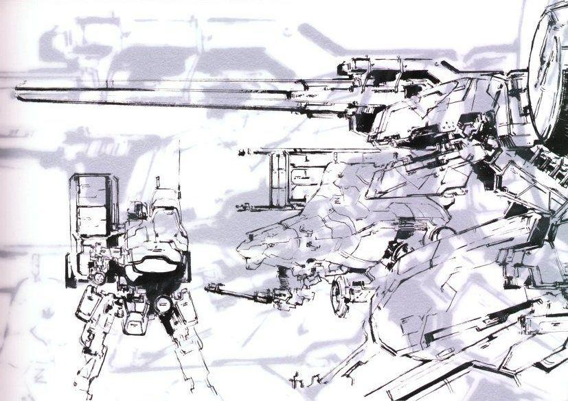

Metal Gear Tech
Sahelanthropus
ST-84 Metal Gear, often known as Sahelanthropus, was a nuclear-armed bipedal tank developed in the 1980s. Utilized by XOF, its production was mostly done by scientist Huey Emmerich and the Soviet Union.
Outer Haven
Kerykeion-class submersible battleship. A modified version of an Arsenal Gear model, it was stolen from the Patriots by Liquid Ocelot, and later used as a base of operations for his private military company Outer Heaven.
Gekko
The Gekko was a large unmanned autonomous fighting vehicle developed by AT Corp for use in ground combat. Officially designated IRVING by the United States Army.
Battle Gear
The Battle Gear served a similar purpose that Metal Gear ZEKE did for Militaires Sans Frontières, acting as a special weapon that could be deployed alongside troops in external operations, as well as a deterrent to enemy forces.
Follow Us


War Machine Products
Metal Gear Designs:  (Image Above) Three bipedal Metal Gear designs: TX-55 Metal Gear, Metal Gear D, and Metal Gear REX.
Top Metal Gears:
- -----------------------------TX-55 Metal Gear---------------------------
- -----------------------------Metal Gear ZEKE----------------------------
- -----------------------------Metal Gear Sahelantrhopus------------------
- -----------------------------Metal Gear REX-----------------------------
- -----------------------------Outer Haven--------------------------------
―Gray Fox
Copyright © 2019-2020. All Rights Reserved.
Images & Content by Fandom (Metal Gear Wiki)
Web Template created with HTML, CSS & Javascript